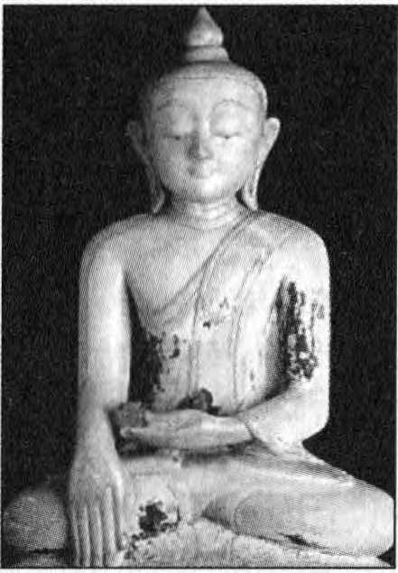

İnsanoğlu sanki şimdiki zamanda yaşıyormuş gibi görünür, ama bu sadece bir görüntüdür. İnsanoğlu geçmişte yaşar. Şimdiki zamandan geçer, ama kökleri geçmişte kalır. Şimdiki zaman, sıradan bilinç için gerçek zaman değildir. Sıradan bilinç için, geçmiş gerçek zaman olup, şimdiki zaman sadece geçmişten geleceğe bir geçiştir, sadece anlık bir geçiş. Geçmiş gerçektir ve gelecek de gerçektir, ama şimdiki zaman sıradan bilinç için gerçek değildir. Gelecek, eski geçmişten başka bir şey değildir. Gelecek, sürekli olarak planlanan geçmişten başka bir şey değildir.
Şimdiki zaman sanki yokmuş gibi görünür. Şimdiki zamanı düşündüğünde, onu bulamazsın, çünkü bulduğun an geçmiş olacaktır. Bulamadığın andan bir an önce gelecekteydi. Bir Buda bilinci, uyanmış varlık için sadece şimdiki zaman vardır. Farkında olmayan, bir uyurgezer gibi uyuyan sıradan bilinçler için geçmiş ve gelecek gerçektir, şimdiki zaman gerçek değildir. Sadece uyandığın zaman şimdiki zaman gerçek olacaktır. Geçmiş de gelecek de gerçek olmayacaktır.
Bu neden böyledir? Neden geçmişte yaşarsın? -Çünkü zihin, geçmişin birikiminden başka bir şey değildir. Zihin hafızadır: Geçmişte yaptığın her şey, düşlerinde gördüğün her şey, istediğin ve yapamadığın her şey, hayal ettiğin her şey senin zihnindir. Zihin, ölü bir kurumdur. Zihin aracılığıyla baktığında, şimdiki zamanı asla bulamayacaksın, çünkü şimdiki zaman hayattır ve hayata ölü bir aracı üzerinden yaklaşamazsın. Hayata ölü araçlarla asla yaklaşamazsın. Hayata, ölüm aracılığıyla dokunamazsın.
Zihin ölüdür. Zihin sadece aynada toplanan toz gibidir. Ne kadar çok toz toplanırsa, ayna o denli az aynaya benzer. Ve toz tabakası çok kalınsa, tıpkı sende olduğu gibi, ayna artık hiçbir şeyi yansıtmaz.
Herkes toz toplar. Hatta sadece toplamakla kalmaz, ona sıkıca tutunursun ve bir hazine olduğunu düşünürsün. Geçmiş geçmiştir; neden hâlâ tutunuyorsun? Onun hakkında artık hiçbir şey yapamazsın. Geri gidemezsin, yaptıklarını geri alamazsın. Neden hâlâ tutunuyorsun? Geçmiş bir hazine değildir. Ama geçmişe tutunup, onun bir hazine olduğunu düşünürsen, zihnin onu gelecekte tabii ki tekrar tekrar yaşamak ister. Geleceğin, değiştirilmiş geçmişinden başka bir şey olamaz -biraz rafine edilmiş, biraz daha süslenmiş. Ama tıpkı geçmiş gibi olacaktır, çünkü zihnin bilinmeyen hakkında düşünemez. Zihnin sadece bilineni yansıtabilir; senin bildiklerini.
Geçmiş nedir? Geçmişte neler yaptın? Her ne yaptıysan - iyi, kötü, şunu, bunu- her ne yapıyorsan, kendi tekrarını yaratır. Karma kuramı budur. İki gün önce öfkelendiysen, öfkelenmek için belirli bir potansiyel yaratmış oldun: Dün tekrar öfkelenmek için. Sonra onu tekrarladın ve öfkene, öfkeli ruh haline, daha büyük bir enerji verdin, onun daha da köklendirdin, suladın. Şimdi bugün onu daha da büyük bir güçle, daha çok enerjiyle tekrarlayacaksın. Ve yarın yine bugünün bir kurbanı olacaktır.
Yaptığın, hatta düşündüğün her hareketin, sürekli olarak sürüp gitmek için kendi yolları vardır, çünkü varlığına bir kanal açmaktadır. Böylece enerjini emmeye başlar. Öfkelenirsin, sonra o ruh halin geçer ve sen artık öfkeli olmadığını düşünürsün; o zaman sorunu kavrayamamışsın. Ruh halin geçtikten sonra, hiçbir şey olmadı. Sadece tekerlek hareket etmiştir ve yukarıda olan tekerlek parmağı aşağı inmiştir. Öfke, birkaç dakika önce yüzeydeydi, ama artık bilinçaltına, varlığının en derinlerine inmiştir. Zamanının gelmesini bekleyecektir. Bu şekilde hareket ettiysen, onu güçlendirdin ve yeniden hayata başlamasını sağladın. Ona gene güç, gene enerji verdin. Bir tohum gibi toprağın altında sürekli olarak çalışarak, uygun bir fırsat ve uygun bir mevsimi beklemektedir ki, filizlenebilsin.
Her hareket kendi kendini devam ettirir; her düşünce kendi kendini devam ettirir. Onlarla işbirliği yaptığın takdirde, onlara enerji vermiş oluyorsun. Er veya geç bu bir alışkanlık haline gelecektir. Yapacaksın, ama yapan sen olmayacaksın. Sadece alışkanlıktan dolayı yapacaksın. İnsanlar, alışkanlığın ikincil bir mizaca sahip olduğunu söylerler. Bu abartı değildir. Aksine az bile. Gerçekte alışkanlıklar sonunda birinci mizaç haline gelirler ve asıl mizaç ikincil hale düşer. Mizaç, tıpkı bir kitabın eki veya dipnotu haline gelir ve alışkanlık ana parça, kitabın ana gövdesi haline gelir.
Alışkanlıkların aracılığıyla yaşıyorsun, yani alışkanlıklar temelde senin aracılığınla yaşıyorlar. Alışkanlığın kendisi sürer; kendi enerjisi vardır. Tabii ki enerjiyi senden alır, ama geçmişte işbirliği yaptığın gibi, şimdiki zamanda da işbirliği yaparsın. Zamanla alışkanlık efendi haline gelir ve sen de sadece bir hizmetçi, bir gölge. Emirleri alışkanlık verir ve sen sadece bunlara itaat eden bir hizmetçi olursun. Bu emirlere uymak zorunda kalırsın.
Alışkanlıklar, seni bir dizi iş yapmaya zorlar; sen kurbansın. Tekrarladığın her hareket veya her düşünce -çünkü düşünce de zihinde fark edilmeyen bir harekettir- gittikçe daha güçlü hale gelir ve onların kontrolü altına girersin. Alışkanlıklarda hapsedilirsin. Daha sonra da hapsedilen bir insanın, bir kölenin hayatını yaşarsın. Ve bu hapis çok zor fark edilir: Alışkanlıklarının ve koşullanmalarının ve yaptığın hareketlerin hapsidir. Bedenin her yerini sarmıştır ve sen içinde dolaşırsın, ama yapanın sen olduğunu düşünmeye ve kendini kandırmaya devam edersin. Öfkelendiğinde, sen yaptın sanırsın. Mantıklı hale getirerek, durumun bunu gerektirdiğini söylersin: 'Kızmak zorundaydım, aksi takdirde çocuk kötü yola sapardı; kızmasaydım, işler sarpa sarardı, ofis kaos içinde olurdu, hizmetçiler dinlemezdi; işleri idare etmek, çocuğu disipline sokmak için kızmak zorundaydım. Eşimi yola getirmek için kızmak zorundaydım.' Bunlar mantıklı bahaneler. Egon bu şekilde hâlâ senin patron olduğunu düşünmeye devam eder, ama değilsin. Öfke eski kalıplardan, geçmişten gelir. Geldiğinde ise ona bir mazeret bulmaya çalışırsın.
Senin içindedir. Bazı zamanlar, hiçbir neden yokken üzüntü ortaya çıkar ve bazen kendini mutlu hissedersin, bazen de coşkulu, kendinden geçmiş olursun. Bütün toplumsal ilişkilerden yoksun, tam bir konfor içinde izole edilmiş, her ihtiyacı karşılanan insan da senin ilişkilerinde yaşadığın tüm bu ruh hallerinden geçer. Bu demektir ki, bazı şeyler senin içinden geliyor ve sen bunları bir başkasına mal ediyorsun. Bu mantıklı bir açıklamadır. Kendini iyi hissedersin, kendini kötü hissedersin ve tüm bu duygular kendi bilinçsizliğinden, kendi geçmişinden gelir. Senin dışında hiç kimse bunlardan sorumlu değildir. Hiç kimse seni öfkeli yapamaz ve hiç kimse seni mutlu yapamaz. Kendin mutlu olursun, kendin kızarsın ve kendin üzülürsün. Bunu anlamadığın sürece hep bir köle olarak kalacaksın.
'Bana ne olursa, kayıtsız şartsız ne olursa, bundan ben kendim sorumluyum. Ben sorumluyum, kesinlikle.' diyebildiğin anda, kendi özünün hâkimiyetini eline geçirirsin. Başlangıçta bu seni çok, ama çok üzecek ve canını sıkacaktır, çünkü sorumluluğu başkalarına atabildiğin sürece, yanlış yapmadığın için kendini daha iyi hissedersin.
Herkes kendi varlığından ve davranışlarından sorumludur, tamamen sorumludur. Başlangıçta, sorumlu olduğun için çok sıkıntılı bir ruh haline gireceksin, çünkü daima mutlu olmak istediğini düşünmüşsündür -öyleyse mutsuzluğundan nasıl sorumlu olabilirsin ki? Daima büyük bir mutluluk istedin, öyleyse kendi kendine nasıl kızarsın? Bu nedenle de sorumluluğu başkalarına atıyordun. Sorumluluğu başkalarına atmaya devam edersen, daima bir köle olarak kalacağını unutma, çünkü hiç kimse karşısındakini değiştiremez. Karşındakini nasıl değiştirebilirsin ki? Hiç kimse karşısındakini değiştirmiş mi? Dünyada yerine gelmeyen en büyük dileklerden biri, karşındakini değiştirmektir. Bunu bugüne kadar hiç kimse başaramamıştır. Bu imkânsızdır, çünkü diğeri de kendi doğrularıyla yaşar -onu değiştiremezsin. Sorumluluğu karşındakinin üstüne atmaya devam ediyorsun, ama onu değiştiremezsin. Sorumluluğu başkalarına attığın için de asla asıl sorumluluğun sende olduğunu göremeyeceksin. Temel değişiklik senin içinde başlamalıdır.
İşte şöyle tuzağa düşersin: Bütün hareketlerinden, bütün ruh hallerinden sorumlu olduğunu düşünmeye başladığın anda, başlangıçta depresyon geçirirsin. Ama bu depresyonu aşabilirsen, kısa bir süre sonra güneşi görürsün, çünkü diğerlerinden kurtuldun; artık tek başına çalışabilirsin. Özgür olabilirsin, mutlu olabilirsin. Tüm dünya mutsuz ve bağımlı olsa da fark etmez. Aksi takdirde bir Buda nasıl mümkün olabilir? Ve bir Patanjali nasıl mümkün olabilir? Ben nasıl mümkün olabilirim? Tüm dünya aynıdır. Krişna'nın dünyası da tıpkı senin dünyan gibidir, ama bir Krişna dans etmeye ve şarkı söylemeye devam eder, çünkü özgür kalmıştır. Ve ilk özgürlüğü, sorumluluğu başkalarına atmaktan vazgeçmektir; ilk özgürlük, sorumlu olanın sen olduğunu bilmektir. O zaman birçok şey mümkün olabiliyor.
Karma felsefesi, sorumlu olanın sen olduğu üzerine kuruludur. Geçmişte ne ektiysen, onu biçersin. Neden ve sonuç arasındaki bağlantıyı takip edemeyebilirsin, ama sonuç buradaysa, nedeni de senin içinde bir yerlerde olmalıdır.
Sana ne olursa olsun -diyelim ki, üzüntülüsün- sadece gözlerini kapat ve üzüntünü seyret. Seni götürdüğü yere git, daha derinlere in. Kısa bir süre sonra nedenine ulaşacaksın. Belki uzun bir yolculuk yapmak zorunda kalacaksın, çünkü bütün hayatın söz konusudur; ve sadece senin hayatın değil, birçok başka hayat söz konusudur. Kendi içinde canını acıtan birçok yara bulacaksın ve bu yaralar yüzünden kendini üzüntülü hissedersin. Onlar üzüntülüdür. Bu yaralar henüz kuramamıştır. Canlıdırlar. Kaynağına geri gitme, etkiden nedenine gitme yöntemi, onları iyileştirecektir. Nasıl mı iyileştirecektir? Neden mi iyileştirecektir? Bununla dolaylı olarak gösterilen fenomen ne midir?
Ne zaman geriye gitsen, vazgeçtiğin ilk şey, sorumluluğu başkalarına atmaktır, çünkü sorumluluğu başkalarına attığında dışarı çıkarsın. O zaman işlemin tamamı yanlıştır. Nedeni bir başkasında bulmaya çalışırsın: 'Eşim neden bu kadar edepsiz?' diye örneğin. O zaman 'neden' eşinin davranışlarına nüfuz etmeye devam eder. İlk adımı atlamışsındır ve işlemin tamamı yanlış olur.
Neden mutsuzum? Neden öfkeliyim? -Gözlerini kapat ve derin bir meditasyona dal. Yere yat, gözlerini kapat, bedenini gevşet ve neden öfkeli olduğunu hisset. Eşini unut gitsin; bu sadece bir bahanedir - A, B, C, D, ne olursa olsun, unut gitsin. Sadece kendi içinde daha derinlere in; öfkeye nüfuz et. Öfkeyi bir nehir gibi kullan; öfkenin içinde akacaksın ve öfken seni içeriye doğru götürecek. İçinde çok zor fark edilir yaralar bulacaksın.
Eşin edepsiz görünüyordu, çünkü içinde zor fark edilen bir yaraya, canını acıtan bir şeye dokundu. Hep güzel olmadığını, yüzünün çirkin olduğunu düşünüyordun ve bu içinde bir yaraya neden oldu. Eşin edepsizse, sana hep yüzünü fark ettirecektir. 'Git aynaya bak!' diyecektir. İşte o zaman bir şeyler acımaya başlar. Eşini aldatmışsındır, o da sana sürekli hesap soracaktır, 'Neden o kadınla o kadar çok güldün? Neden şu kadmla o kadar mutlu oturuyordun?' diye. Yine bir yaraya dokunulmuştur. Aldattın, suçlu hissediyorsun. Yara canlı. Gözlerini kapat, öfkeni hisset, bütünüyle meydana gelmesine izin ver ki, ne olduğunu tamamen görebilesin. Sonra enerjinin yardımıyla geçmişe doğru git, çünkü öfken geçmişten gelir. Tabii ki gelecekten gelemez. Gelecek henüz gelmemiştir. Ayrıca şimdiki zamandan da gelmez.
Karma'nın olaylara bakış açısı budur: Gelecekten gelemez, çünkü gelecek henüz gerçekleşmemiştir. Şimdiki zamandan gelemez, çünkü henüz ne olduğunu bilemiyorsun. Şimdiki zamanı sadece uyanmış olanlar bilir. Sen sadece geçmişte yaşıyorsun, öyleyse geçmişinden bir yerlerden gelmek zorundadır. Yara, hafızanda bir yerlerde olmalıdır. Geri git. Orada sadece tek bir yara değil, birkaç yara olabilir. Küçük, büyük yaralar. Daha derine git ve ilk yarayı bul; öfkenin asıl kaynağını. Denersen, bulabilirsin, çünkü oradadır. Oradadır, bütün geçmişin oradadır. Tıpkı bir film rulosu gibidir, yuvarlanmış içeride bekliyordur. Ruloyu aç ve filmi seyretmeye başla. Prati-prasay işlemi budur. Kökteki nedene geri gitmek anlamına gelir. Ve bu işlemin güzelliği şudur: Bilinçli olarak geri gidebilirsen, bilinçli olarak bir yarayı hissedebilirsen, yara anında iyileşir.
Neden mi iyileşir? -Çünkü yara bilinçsizlik, bilinmezlik tarafından yaratılmıştır. Yara, inkârın, uykunun bir parçasıdır. Bilinçli olarak geri gider ve yaraya bakarsan, bilinç iyileştirici bir güç haline gelir.
Geri gitmek, bilinçsiz olarak yaptığın şeylerin üzerine bilinçli olarak gitmek anlamına gelir -Sadece bilincin ışığı iyileştirir. O, iyileştirici bir güçtür. Bilinçli yapabildiğin her şey iyileştirilebilir ve artık acımayacaktır.
Geriye giden insan, geçmişi serbest bırakır. O zaman geçmiş artık çalışmıyordur; geçmiş artık onu sıkıca tutamıyordur ve geçmiş bitmiştir. Geçmişin artık varlığında bir yeri yoktur. Ve geçmişin varlığında bir yeri kalmadıktan sonra, şimdiki zamanda yaşayabilirsin, daha önce hiç olmadığı gibi. Yere ihtiyacın vardır; geçmiş içini o kadar çok doldurmuştur ki -tıpkı ölü şeylerden oluşan bir hurdalık gibi. Şimdiki zaman girecek yer bulamamaktadır. Hurdalık, gelecek hakkında hayal kurmaya devam eder. Böylece hurdalığın yarısı artık olmayan şeylerle, yarısı da daha henüz olmamış şeylerle doludur. Ya şimdiki zaman? -Sadece kapının önünde bekler. Bu nedenle şimdiki zaman geçmişten geleceğe bir geçişten başka bir şey değildir, sadece anlık bir geçiştir.
Geçmişi bir kenara bırak! Geçmişi bir kenara bırakmadığın sürece, bir hayalet hayatı yaşarsın. Yaşamın gerçek değildir, var değildir. Geçmiş senin aracılığınla yaşar, ölüler seni avlamaya devam ederler.
Geri git -Ne zaman bir fırsatını bulursan, sana ne zaman birşeyler olursa: Mutluluk, mutsuzluk, üzüntü, öfke, kıskançlık, gözlerini kapat ve geri git. Kısa bir süre içinde geriye yolculuk etme konusunda etkin olacaksın. Kısa bir süre sonra, zamanda geriye yolculuk yapabileceksin ve birçok yara açılacaktır. Bu yaralar içinde açıldığında, bir şey yapmaya kalkma.
Bunu yapmana gerek yoktur. Sadece seyret, bak, izle. Yara oradadır. Sadece seyret, seyredici enerjini yaraya ver, ona bak. Yargılamadan ona bak, çünkü yargılarsan, ‘Bu kötü, bu böyle olmamalı.’ dersen, yara tekrar kapanacaktır. O zaman tekrar gizlenmek zorunda kalacaktır.
Kınama, takdir etme. Sadece bir tanıksın, ilgisi olmayan bir seyirci. Reddetme. 'Bu iyi değil.' deme, çünkü bu da bir reddetmedir ve bastırmaya çalışırsın. İlgisiz kal. Sadece seyret ve bak. Merhametle bak ki, iyileştirme gerçekleşsin.
İlgisiz, merhametli bir bilinç, yaranın üzerine geldiğinde, yara yok olur, buharlaşır. Neden diye sormaz. Sadece doğaldır, nasılsa öyledir, nasıl oluyorsa öyledir. Bunu söylüyorsam, deneyimlerime dayanarak söylüyorum. Dene ve bu deneyimi sen de kazan. Yolu budur.
Geçmişe geri git. Geçmişe geri git dediğimde, geçmişi hatırla demek istemiyorum. Hatırlamak işe yaramayacaktır; hatırlamak güçsüz bir işlemdir. Unutulmaması gereken ayrım şudur: Hatırlamak hiçbir işe yaramaz -hatta zararlı bile olabilir. O yüzden tekrar yaşa. Bunlar birbirinden tamamen farklı şeylerdir. Farkı çok bariz değildir ve anlaşılması gerekir.
Bir şeyi hatırla: Çocukluğunu hatırla. Çocukluğunu hatırlarken burada ve şimdide kalırsın. O çocuğa dönüşmezsin. Hatırlayabilirsin, gözlerini kapatıp, hatırlayabilirsin ve yedi yaşında bir çocukken bahçede koştuğunu hatırlayabilirsin -görebilirsin. 5en buradasın ve geçmiş bir film şeridi gibi gözlerinin önünden geçer: Koşuyorsun, o çocuk koşuyor ve kelebeği yakalamaya çalışıyor. Sen görensin ve çocuk nesnedir. Hayır, bu doğru değil; bu hatırlamadır. Güçsüzdür, yardım edemez.
Yaralar daha derindir. Hatırlamakla iyileşmezler ve hatırlamak, bilinçli zihnin bir parçası olarak kalır. Çok, ama çok önemli olan her şey bilinçsizlikte saklıdır. Bu yüzden sadece yararsız şeyleri hatırlarsın ya da sadece zihninin kabul ettiği şeyleri hatırlarsın.
Kötü olan, çirkin olan ne varsa, hepsi bilinçsizliğe itilmiştir, çünkü egon onlara bakmak istemez. Bütün kötülükler unutulmuştur ve bütün mutluluklar hatırlanır. Mutluluğu bağrına basmaya ve kötülükleri unutmaya devam edersin.
Bu bir seçimdir. Bu nedenden dolayıdır ki, herkes daha sonra çocukluğun bir cennet olduğunu söyler, çünkü yanlış olan her şeyi unutmaya çalışmışsındır. Çocukluğun, senin onu hatırladığın şekilde gerçek değildir, kurgudur. Egon tarafından yaratılmış bir kurgudur. Böylece hatırladığın zaman mutlu olayları hatırlayacaksın, mutsuz olanları değil. Tekrar yaşadığında ise tamamını tekrar yaşıyorsun: Mutlusunu, mutsuzunu, hepsini.
Tekrar yaşamak nedir? -Tekrar yaşamak, tekrar o çocuk haline gelmektir. Çocuğun bahçede nasıl koştuğuna bakmak değil, o bahçede koşan çocuk haline gelmektir. Seyirci olma - kendin ol. Bu mümkündür, çünkü o çocuk hâlâ senin içinde var, hâlâ senin bir parçandır. Tabaka tabaka yaşadığın her şey senin içinde vardır. Çocuktun, o orada; sonra genç oldun, o da orada; ve yaşlandın, o da orada. Her şey burada, katman katman.
Gözlerini kapat, yere yat ve geriye git. Bunu kolayca deneyebilirsin. Bu hüneri geliştirebilirsin. Her gece yatağına yatıp, sabaha doğru geri gidebilirsin. Yatağa yatmak en son şeydir -onu ilk haline getir ve şimdi geriye doğru git. Yatmadan önce ne yaptın? - Bir bardak süt içtin; tekrar al, tekrar yaşa. Eşinle kavga ettin; tekrar yaşa. Yargılama, çünkü şu anda yargılaman gerekmez. Olmuştur. İyi veya kötü deme, değerlendirme yapma. Sadece tekrar yaşa, o olmuştur. Geriye gidiyorsun: Sabahın erken saatinde seni uyandıran saatin alarm sesi; onu tekrar dinle. Sadece git ve saati geri çevirerek, günün her anını tekrar yaşamaya çalış. Kendini çok, ama çok canlanmış hissedeceksin ve çok güzel bir uykuya dalacaksın, çünkü günle işin bitmiştir. Artık o gün sana asılmıyor. Onu bilinçli bir şekilde tekrar yaşadın.
Gün boyunca bilinçli olmak zordu; o kadar çok şeyle boğuşmak zorunda kaldın ki. Ve artık pazara götürebileceğin bilincin kalmadı. Belki tapınakta, birkaç saniye olabilir. Belki meditasyon yaparken, birkaç saniye farkına varabilirsin. Ama bilinçsizleştiğin markete, dükkâna, olaylar dünyasına götürecek kadar bilincin yok. Tekrar eski uyurgezer alışkanlığına geri dönersin. Ama yatağında yatarak, bilinçli olabilirsin. Sadece seyret, tekrar yaşa, bırak her şey olsun.
İnsan farkındaysa, anı yaşar, geçmişi değil. Aradaki fark budur: Geçmişte yaşarsan, gelecek yaratılır ve Karma'nın çarkı döner. Şimdiki zamanda yaşıyorsan, Karma'nın çarkı yoktur. Üstesinden gelmişsindir, içinden çıkmışsındır. Hiçbir gelecek yaratılmaz.
Şimdiki zaman, asla gelecek yaratmaz, sadece geçmiş geleceği yaratır. O zaman yaşam, geçmişin devamı olmadan anlık bir fenomen haline gelir. Bu anı yaşarsın. Bu an geçti mi, başka bir an gelir. Bir diğer anı yaşarsın, ama geçen o an sayesinde değil, farkındalığın, tetikte oluşun, duyguların, varlığın sayesinde. O zaman endişe yoktur, rüyalar yoktur, gelecekle ilgili hayaller, geçmişten gelen içki sersemliği yoktur. İnsan sadece ağırlıksızdır; uçabilir. Yerçekimi anlamını kaybeder. İnsan kanatlarını açıp, gökyüzündeki kuş olabilir ve süzülüp gidebilir. Geri dönmeye ihtiyaç duymaz. Geri gelinecek yer yoktur. Geri dönüşü olmayan noktaya ulaşılmıştır.
Farkında olmayan insan toprakta yürür -sadece toprakta yürümekle kalmaz, ıslak toprakta yürür, ayak izleri bırakır - geçmiştedir. Farkında olan insan bir kuş gibi uçar; gökyüzünde ayak izleri bırakmaz. Geriye hiçbir şey bırakmaz. Geriye baktığında orada bir gökyüzü vardır -ayak izi yoktur, anılar yoktur.
Bunu söylüyorsam, bu bir Buda'nın seni gördüğünde seni hatırlamayacağı anlamına gelmez. Anıları vardır, ama psikolojik anıları değil. Zihni çalışıyordur, ama bir mekanizma olarak ayrı çalışıyordur. Zihninle özdeşleşmemiştir. Buda'ya gidip, 'Daha önce de geldim, beni hatırladın mı?' dediğinde, seni hatırlayacaktır. Herkesten çok daha iyi hatırlayacaktır, çünkü hiçbir yükü yoktur. Şeffaf, aynaya benzer bir zihne sahiptir.
Aradaki farkı anlamak zorundasın, çünkü insanlar kimi zaman kişinin mükemmel bir biçimde tetikte ve farkında olup, zihin bırakıldığında her şeyi unutacağını düşünür. Hayır, o kişi hiçbir şeyi taşımaz, sadece hatırlar. Artık zihni çok daha iyi işliyordur. Zihni daha şeffaf, aynaya benzerdir. Varoluşsal anıları vardır, ama herhangi bir psikolojik anısı yoktur. Bu ayrımı görmek çok zordur.
Örneğin, dün bana geldin ve bana kızdın. Bugün yine bana geliyorsun ve ben seni yine hatırlayacağım, çünkü dün gelmiştin. Yüzünü hatırlayacağım, seni tanıyacağım, ama bana kızgınlığının yarasını taşımayacağım. Bu senin işindir. Ben, senin kızgınlığının yarasını taşımam. Öncelikle o yaranın açılmasına izin bile vermedim. Kızdıysan, bu senin kendine yaptığın bir şeydi, bana değil. Benim burada olmam sadece bir tesadüftü. O yarayı ben taşımıyorum. Ben sana sanki dün kızgın olan kişiymişsin gibi davranmam. Öfken seninle benim arama girmeyecektir. Öfke, şimdiki zamandaki ilişkinin yüzünü kızartmayacaktır. Öfke, şimdiki zamandaki ilişkinin yüzünü kızartırsa, bu psikolojik bir anıdır. Demek bir yara taşınmaktadır.
Varoluşsal anılar sorun değildir, burada olmaları gerekir. Bir Buda, müritlerini hatırlamak zorundadır: Anand, Anand'dır ve Sariputra, Sariputra'dır. Hiçbir zaman kimin Anand, kimin Sariputra olduğu konusunda kafası karışmaz. Anıyı taşır, ama bu anı sadece ayrı çalışan beyin mekanizmasının bir parçasıdır, sanki çantanda bir bilgisayarın varmış ve bu bilgisayar hafızanı taşıyormuş gibidir. Buda'nın beyni, çantadaki bilgisayar, ayrı bir fenomen olmuştur. İlişkilerine girmez. Onu her zaman taşımaz. Sadece gerekli olduğu zaman açıp bakar, ama asla onunla özdeşleşmez.
İnsan, tam farkındalıkla şimdiki zamanda yaşıyorsa -ki tam farkındalıkla başka bir yerde yaşayamazsın, çünkü farkında olduğunda sadece şimdiki zaman kalır; artık geçmiş, gelecek yoktur; tüm hayatın şimdi olan bir fenomene dönüşür -işte o zaman hiçbir Karma, hatta Karma'nın tohumu bile birikmez. Bağlarından, kendi yarattığın bağlarından kopmuşsundur.
Gerçekten de özgür olabilirsin. Önce tüm dünyanın kurtulmasını beklemen gerekmez. Büyük mutluluğu yakalayabilirsin. Dünyanın sefaletten kurtulmasını beklemek zorunda değilsin. Beklersen, boşuna beklemiş olursun -bu asla olmayacak.
Bu içsel bir fenomendir: Bağlarından kurtulmak. Kesinlikle özgür olmayan bir dünyada, tamamen özgür yaşayabilirsin. Tamamen özgür yaşayabilirsin; bir hapishanede olsan bile fark etmez, çünkü bu tamamen içsel bir tutumdur. İçsel tohumların kırılmışsa, özgürsündür. Buda'yı bir mahkûm haline getiremezsin. Onu hapse atsan bile bir mahkûm haline getiremezsin. Orada yaşayacaktır, ama tamamen farkında olarak yaşayacaktır. Tamamen farkındaysan, daima mokşa'dasın, daima özgürsün. Farkındalık özgürlüktür; farkında olmayış bir bağdır.
Farkında ol ve farkındalık enerjisini geçmişine götür. Geçmişin tamamını yakacaktır: Acı ve zevk kaybolacaktır; iyi ve kötü kaybolacaktır. Ve her ikisi de kaybolduğunda, iyinin ve kötünün çift yönlülüğünü aştığında, özgür kalacaksın. O zaman ne acı, ne de zevk olmayacaktır. O zaman sessizlik çöker, derin bir sessizlik. Bu sessizlikten yeni bir fenomen doğar: Satchidananda. Bu sessizlikte, derin sessizlikte, gerçek seni bulur, bilinç seni bulur, büyük mutluluk seni bulur. Ben tamamen Patanjali'den yanayım.
Birçok kişi, Nirvana'ya Patanjali sayesinde erişmektedir. Öyleyse Patanjali'yi iyi dinle. Sadece dinleme, ruhunu özümsemeye çalış. Patanjali sayesinde çok şey mümkündür. Dünyada iç yolculuk konusunda en büyük bilim adamlarından biridir.
Soru
Psikolojinin üçüncü türünü, Buda psikolojisini geliştirmeye çalıştığını söyledin, ama incelemek için Budaları nereden bulacaksın?
Bir tanesi zaten var ve er veya geç birçoğunuzu Buda'ya çevirecektir. Biri varsa, birçoğu da olabilir, çünkü o biri katalitik bir temsilci gibi çalışabilir. Bir şey yapacağından değil, sadece burada olması bile olayların harekete geçmesini sağlayacaktır. Katalitik temsilcinin anlamı budur. Er veya geç bir çoğunuz Buda'ya dönüşeceksiniz, çünkü herkes temelde bir Buda'dır. Bunu kabul etmeyi daha ne kadar geciktireceksin? Zordur -ertelemek, geciktirmek için elinden geleni yapacaksın, milyonlarca zorluk yaratacaksın, ama bunu ne kadar sürdürebileceksin?
Seni, bir şekilde öleceğin ve Buda'nın doğacağı dipsiz kuyuya itmek için buradayım. Sorun, daima birini bulmaktadır. Birini bulduktan sonra, temel koşullar, temel gereksinimler yerine getirilmiş sayılır. O zaman birçok şey aniden mümkün olabilir. Ve birçoğu varsa, binlercesi de mümkün olabilir. Birincisi bir kıvılcım gibi çalışır ve küçük bir kıvılcım, toprağın tamamını yakmaya yeterlidir. Geçmişte işte böyle olmuştur. Gautam, ilk Buda olduktan sonra, zamanla binlercesi Buda olmuştur. Bu, olma meselesi değildir, zaten öylesindir. Sadece birilerinin bunu sana hatırlatması gerekiyor, hepsi bu.
Geçen gün Ramakrişna'nın mesellerinden birin okuyordum. Bunu seviyorum. Ne zaman elime geçse, tekrar tekrar okuyorum. Katalitik bir temsilci olan ustanın hikâyesidir.
Hikâye şöyledir: Dişi bir kaplan, yavrularken ölmüş ve yavrusu keçiler tarafından büyütülmüştü. Tabii ki kaplan da keçi olduğuna inanıyordu. Bu çok basitti, doğaldı; keçiler tarafından büyütüldüğüne göre, keçiler gibi yaşadığına göre, keçi olduğuna inanıyordu. Ot yiyerek ve ot çiğneyerek, vejetaryen olarak yetişti. Hiçbir fikri yoktu. Rüyasında bile bir kaplan olabileceğini düşünmüyordu, ama o bir kaplandı.
Sonra bir gün, yaşlı bir kaplan keçi sürüsünün yoluna çıktı ve bu yaşlı kaplan gözlerine inanamadı. Keçilerin arasında genç bir kaplan geziyordu! Ne keçiler kaplandan korkuyorlardı, ne de aralarında bir kaplanın gezdiğinden haberleri vardı. Kaplan da bir keçi gibi yürüyordu. Yaşlı kaplan, genç kaplam bir şekilde eline geçirdi, çünkü onu yakalamak çok zordu. Kaçtı -kaçmaya çalıştı, ağladı, bağırdı. Korkuyordu, korkudan tir tir titriyordu. Bütün keçiler kaçtı ve o da onlarla birlikte kaçmaya çalıştı, ama yaşlı kaplan onu tuttu ve göle doğru çekti. Gitmeyecekti. Yol boyunca tıpkı senin bana yaptığın gibi, direndi. Gitmemek için elinden geleni yaptı. Ölesiye korkmuştu, ağlıyordu, gözyaşı döküyordu, ama yaşlı kaplan gitmesine izin vermedi. Yaşlı kaplan onu hâlâ itiyordu ve göle götürdü.
Göl, bir ayna kadar sessizdi. Genç kaplanı suya bakmaya zorladı. Gözleri yaşla dolu -gördükleri net değildi, ama bir görüntü vardı- tıpkı yaşlı kaplana benzediğini gördü. Gözyaşları yok oldu ve yepyeni bir varoluş duygusu oluştu. Keçiler zihninden kaybolmaya başladı. Artık bir keçi değildi, ama aydınlanmasına kendi de inanamıyordu. Bedeni hâlâ biraz titriyordu, korkuyordu. 'Belki de hayal görüyorum. Bir keçi nasıl bu kadar çabuk bir kaplana dönüşebilir? Bu mümkün değil, asla olmadı. Asla bu şekilde olmadı.' diye düşündü. Kendi gözlerine inanamıyordu, ama ilk kıvılcım, ilk ışık varlığına girmişti. Artık önceki gibi değildi. Bir daha asla eskisi gibi olamayacaktı.
Yaşlı kaplan onu mağarasına götürdü. Artık o kadar direnmiyordu, o kadar isteksiz değildi, korkmuyordu. Zamanla yüreklendi, cesaret topladı. Mağaraya giderken bir kaplan gibi yürümeye başladı. Yaşlı kaplan ona yemek için biraz et verdi. Bir vejetaryen için et yemek zordu, neredeyse imkânsız, mide bulandırıcıydı. Onu eti yemeye zorladı. Genç kaplanın burnu ete yaklaştığında, bir şey oldu: Etin kokusundan dolayı varlığının derinlerinde derin uykuda olan bir şey uyandı. Ete doğru çekildi, etkilendi ve yemeye başladı. Eti bir kez tattıktan sonra, varlığının içinden gelen bir kükreme geçti. Keçi, bu kükremede kayboldu ve kaplan, tüm güzelliği ve ihtişamıyla ortaya çıktı.
İşlemin tamamı budur ve bunun için yaşlı bir kaplan gerekir. Sorun da burada: Yaşlı kaplan buradadır ve ne şekilde olursa olsun, yana kaçıp kurtulmaya çalışsan da kaçmak mümkün değildir. İsteksizsindir, göle getirilmen zordur, ama ben seni oraya götüreceğim. Bütün hayatın boyunca ot yemişsindir. Etin tadını tamamen unutmuşsundur, ama ben seni o eti yemeye zorlayacağım. Tadını bir kez aldın mı, kükremen patlayacaktır. Bu patlama sırasında keçi yok olacak ve bir Buda doğacaktır.

Hayat bir gizemdir ve hayat hakkındaki en gizemli şey, canlı olup, yine de yaşamıyor olabilmendir. Sadece doğmuş olmak, yaşamak için yeterli değildir. Doğmuş olmak sadece bir fırsattır. Onu yaşamak için kullanabilirsin ve ondan mahrum da kalabilirsin. O zaman ölü bir hayat yaşarsın. Sadece görünüşte yaşıyormuşsun gibi olacaktır, ama derinde içinde canlı bir akım olmayacaktır.
Yaşamın kazanılması gerekir, birileri bunun için çalışmak zorundadır. İçinde bir tohum gibidir: Çok çaba, toprak, doğru toprak, özen, sevgi, farkındalığı gerektirir. Ancak o zaman filizlenebilir. Ancak o zaman bir gün ağacın meyve yapması, bir gün çiçek açması beklenebilir. Çiçek açma aşamasına gelmediğin sürece, adın yaşar, ama sen fırsatı kaçırmış olursun. Hayat bir kutlamaya dönüşmediği sürece, hayat değildir.
Coşku, nirvana, aydınlanma, sen ona ne dersen de -çiçeklenme budur. Mutsuz olarak kalırsan, canlı değilsindir. Mutsuzluğun kendisi, basamağı kaçırdığını gösterir. Mutsuzluğun kendisi, hayatın içinde patlamak için mücadele verdiğini, ama kabuğun fazla sert olduğunun belirtisidir. Tohumun kabuğu çıkmasına izin vermemektedir. Egon çok fazladır ve kapılar kapalıdır. Sefalet, hayatın milyonlarca renk, milyonlarca gökkuşağı, milyonlarca çiçek, milyonlarca şarkı olarak patlamak istemesi için verdiği bu mücadeleden başka bir şey değildir.
Mutsuzluk, olumsuz bir durumdur. Aslında mutsuzluk, coşkunun eksikliğinden başka bir şey değildir. Bunun iyice anlaşılması gerekir, aksi takdirde mutsuzlukla mücadele etmeye başlardın, ama hiç kimse olmayan bir şeyle mücadele edemez. Tıpkı karanlık gibidir: Karanlıkla savaşamazsın. Savaşırsan, sadece aptalsın. Bir ışık yakabilir ve karanlığı yok edebilirsin, ama karanlıkla savaşamazsın. Kiminle savaşacaksın ki? Karanlık varoluşsal değildir, orada değildir. Atabileceğin, öldürebileceğin veya ezebileceğin bir şey değildir. Karanlığa hiçbir şey yapamazsın. Bir şey yaparsan, kendi enerjini dağıtırsın, ama karanlık yine de bundan etkilenmemiş bir şekilde aynı yerinde kalır. Karanlığa bir şey yapmak istiyorsan, ışıkla bir şey yapmak zorundasın, karanlıkla değil. Işık yakmak zorundasın; aniden karanlık olmayacaktır.
Kendini kötü hissediyorsun ve çözüm aramaya devam ediyorsun. Burada, bu noktada dindar olan ve dindar olmayanların yolu bölünüyor, ayrılıyor. Dindar olmayan, kendini kötü hissetmeyeceği durumlar yaratmaya çalışarak; mutsuzluğu gözlerinden, görüş alanından uzaklaştırmaya çalışarak mutsuzlukla mücadele etmeye başlar. Dindar olan, coşku aramaya, büyük mutluluğu aramaya, satchidananda'yı -ki sen buna Tanrı diyebilirsin- aramaya başlar. Dindar olmayan bir insan, olmayan bir şeyle savaşırken, dindar bir insan varoluşsal olanı getirmeye çalışır: Işığı, büyük mutluluğu.
Bu yollar birbirlerinin tamamen karşıtıdır. Hiçbir yerde buluşmazlar. Kilometrelerce paralel gidebilirler, ama hiçbir yerde buluşmazlar. Dindar olmayan insan, bu yolların bölündüğü, ayrıldığı noktaya geri gelmek zorunda kalır. Karanlıkla, mutsuzlukla savaşmanın saçma olduğunu anlamak zorunda kalır. Bunu unut ve onun yerine ışığı yakalamak için çaba göster. Işığı bir kez yakaladın mı, başka hiçbir şeye ihtiyacın olmaz; mutsuzluk yok olur.
Hayat, orada sadece bir potansiyel olarak vardır. Üzerinde çalışmak, güncel ve varoluşsal bir duruma getirmek zorundasın. Hiç kimse canlı doğmaz, sadece canlı olma olasılığıyla doğar.
Bir tohum gibi yaşarsın. İnsanların tohum olarak yaşamaya devam etmelerinin birkaç nedeni vardır ve insanların yüzde doksan dokuzu tohum gibi yaşar. Bunun bir nedeni olmalıdır. Bir tohum gibi yaşamak rahattır. Hayat tehlikeli görünür. Bir tohum olarak kalınca insan kendini daha güvende hisseder. Etrafında bir güvenlik çemberi vardır. Tohum, saldırıya açık değildir. Bir kez filizlendi mi, saldırıya açık hale gelir: Birileri ona saldırabilir, öldürebilir -hayvanlar, çocuklar, insanlar vardır. Tohum bir kez filizlenip bitki haline geldi mi, saldırıya açık hale gelir, güvenliği azalır, tehlikeler başlar.
Hayat büyük bir maceradır. Tohumun içinde, tohumun içinde saklıyken, güvendesin, koruma altındasın. Hiç kimse seni öldürmeye çalışmaz. Canlı değilsen, seni nasıl öldürebilirler ki? İmkânsız. Sadece canlıysan öldürülebilirsin. Ne kadar canlı olursan, o denli saldırıya açık hale gelirsin. Ne kadar canlı olursan, etrafındaki tehlikeliler o denli artar. Mükemmel bir biçimde canlı olan insan tehlikeler dünyasında yaşar. Bu yüzden insanlar tohumlar gibi yaşarlar -korunmuş, güvende.
Unutma ki, hayat, hayatın en derindeki doğası emniyetsizliktir. Emniyetli bir hayatın olamaz, sadece emniyetli bir ölümün olabilir. Bütün sigortalar ölüm üzerine yapılır. Hayat için sigorta olamaz. Bütün sigortalar korumak, güvene almak, kapalı kalmak için yapılır. Hayat tehlikelidir, etrafta milyonlarca tehlike vardır. Bu nedenle insanların yüzde doksan dokuzu tohum olarak kalmaya karar verirler. İyi ama neyi koruyorsun? -Korunacak bir şey yok. Neyi emniyete alıyorsun? -Emniyete alınacak bir şey yok. Bir tohum, yolun üzerindeki çakıl kadar ölüdür. Ve bir tohum olarak kaldığı takdirde, mutsuzluk da olacaktır. Mutsuzluk olacaktır, çünkü öyle olmaması gerekiyordu. Kaderinde tohum olarak kalmak değil, filizlenmek vardı. Kuş, her şeyin mümkün olduğu engin ve tehlikeli gökyüzüne doğru kanat açmak üzere yumurtasından çıkmak zorundadır.
Tüm bu olasılıklarla birlikte ölüm de oradadır. Hayat, ölümün riskini taşır. Ölüm, hayata karşı değildir, aksine hayatın çiçek açtığı zemindir. Ölüm, hayatın karşıtı değildir. Sadece üzerine beyaz tebeşirle yazı yazdığın bir karatahta gibidir. Beyaz bir duvarın üzerine yazı yazabilirsin, ama o zaman yazdıkların görünmeyecektir. Karatahta üzerinde ise beyazla ne yazarsan yaz görünecektir. Ölüm de bir karatahta gibidir: Hayatın beyaz çizgileri üzerinde görünür. Hayata karşı değildir; hayatın zeminidir. Canlı olmak isteyenler, bir şeye karar vermek zorundadırlar: Ölümü kabul etmeye karar vermek zorundadırlar. Sadece ölümü kabul etmekle kalmayıp, onu hoş karşılamaları da gerekir. Her an onun için hazır olmak zorundadırlar. Ölümü kabul etmezsen, ilk başlangıcından beri ölü olarak kalırsın. Korunmanın tek yolu budur - bir tohum olarak kalmak. Kuş, yumurtanın içinde ölecektir... Ve birçok kuş yumurtanın içinde ölmektedir.
Unutma ki, daima ölümden korktuğunu düşünüyorsun, ama ben sana diyorum ki, ölümden değil, sen hayattan korkuyorsun.
Ölüm korkusunun temelinde hayata karşı duyulan korku yatar, çünkü sadece hayat ölebilir. Ölümden korkuyorsan, hayattan da korkarsın. Düşmekten korkuyorsan, yükselmekten de korkarsın, çünkü sadece yükselen bir dalga düşebilir. Reddedilmekten korkuyorsan, herhangi bir bedene yaklaşmaktan korkarsın. Reddedilmekten korkuyorsan, sevemez duruma gelirsin. Ölümden korkarsan, yaşayamaz hale gelirsin. O zaman sadece adının hatırına yaşarsın ve etrafını sadece mutsuzluklar, karanlık ve gece sarar.
Sadece doğmuş olmak yeterli değildir; gereklidir, ama yeterli değildir. İki kez doğmak zorundasın. Hinduların bunun için kullandıkları bir sözcük vardır: Onlar buna dwij derler, iki kez doğan. Birinci doğum, annenden doğmak, sadece bir olanaktır, potansiyel bir fenomendir, ama henüz güncel değildir. İkinci bir doğum gerekir. İsa'nın diriliş dediği de budur: Bütün kabukları, bütün egoları, bütün geçmişi, aşina olanı, bilineni kırdığın ve bilinmeyene, yabancı olana, tehlikelerle dolu varoluşa doğru yol aldığın ikinci bir doğum. Orada her an ölme olasılığın vardır. Ve bu ölüm olasılığıyla her an giderek daha, canlı olursun.
Aslında hayat hiçbir zaman ölmez, ama bu ancak hayatın ne olduğunu bilen birinin deneyimidir. Yumurtanın kabuğundan çıkmak için asla yeterli cesareti toplayamamışsındır. Öyleyse hayatın ne olduğunu nereden bilebilirsin ve hayatın ölümsüzlük olduğunu nereden bilebilirsin? Öleceksin, ama hayat asla ölmez. Mutsuzluk içinde yaşayacaksın, çünkü hayatın inkârısın; egon, hayatın inkârıdır. Egonu reddet ki, hayat sana gelsin. Büyük insanların ısrarı bundandır. İsa, Buda, Muhammed, Mahavir, Zerdüşt, Lao Tzu -hepsi sadece tek bir şey üzerinde ısrar ederler: Egonu reddet ki, hayat sana fazlasıyla gelsin. Ama sen egona yapışıp kalıyorsun. Egoya yapışıp kalmak, karanlığa, mutsuzluğa yapışıp kalmaktır.
Cennetten nasıl cehennem doğabilir? Mutsuzluktan nasıl coşku doğabilir? Hayır, mutsuzluklar gittikçe artarak mutsuz hayatından doğacaktır. Bir çocuk, yaşlı bir adamın olacağı kadar mutsuz değildir. Aslıda tam tersi olmalıdır, çünkü yaşlı adam daha fazla yaşamıştır. Aslında doruğa, deneyimlerin çiçeklerine, doruğuna ulaşmış olmalıdır. Ama hiçbir şekilde yaklaşamamıştır. Tam tersine, hayat yükselen bir dalga olmamıştır ve o da hiçbir cennete ulaşamamıştır. Aksine derin ve daha derin bir cehenneme düşmüştür. Bir çocuk, yaşlı bir adamdan daha cennete yakın görünür. Bu tamamen saçmadır; doğaya karşıdır. Çocuk sadece bir tohumdur. Yaşlı bir adamsa çok eski bir meşe, büyük bir ağaç gibi olmalıdır, ama değildir. Cehennemin daha da karanlık âlemlerine ulaşmıştır. Sanki hayat yükselen değil de düşen bir fenomenmiş, sanki güneşe doğru yükselmiyormuşsun da gitgide daha karanlık âlemlere dalıyormuşsun gibi görünüyor.
Yaşlı bir adama ne olur? Çocuk mutsuzdur, ama yaşlı adam da mutsuzdur. Her ikisi de aynı yoldadır. Çocuk yolculuğuna daha yeni başlamıştır ve yaşlı adam yolculuğunun tüm sefilliklerini biriktirmiştir.
Cehennemden cennet doğmaz. Bugün mutsuzsan, yarın nasıl olur da mutlu, çok mutlu olabileceğini düşünürsün? Yarın da yine senden doğacaktır. Başka nereden gelebilir ki? Yarın, saatten çıkmaz. Yarın, senin yarının senden doğar. Tüm dünlerin, bugün de dahil olmak üzere, yarının olacaktır. Aritmetiği çok basit: Bugün mutsuz ve sefilsin, öyleyse yarın nasıl mutlu ve çok mutlu olabilirsin? - İmkânsız! Ölene kadar bu imkânsız. Çünkü ölümünle birlikte bütün dünler de ölür. O zaman mutsuzluklarından doğmaz, taze bir fenomen olur; ilk kez olan bir şey olur. O zaman zihninden doğmaz, varlığından doğar. Dwij, iki kez doğmuş olursun.
Mutsuzluğun fenomenini anlamaya çalış. Neden bu kadar mutsuzsun? Bu kadar çok mutsuzluğu ne yaratıyor? Seni izliyorum, içine bakıyorum. Mutsuzluk üzerine mutsuzluk, katman katman. Yaşamaya devam etmen gerçekten mucize. Sanırım umut deneyimden daha güçlü, hayal gerçekten daha güçlü. Aksi takdirde, yaşamaya nasıl devam edebilirdin? Yarın bir şekilde her şeyi değiştirecek bir şeylerin olacağına dair umuttan başka yaşamak için hiçbir nedenin yok. Mucize yarındır -ve bunu birçok kez, ama birçok kez düşündün. Milyonlarca yarın geldi, bugün oldu, ama umut hep kaldı. Umut yine yaşamaya devam ediyor. İçinde hayat olduğu için yaşamıyorsun, umut olduğu için yaşıyorsun.
Umut senin tek hayatın. Umut tehdidiyle tüm mutsuzluklara müsamaha gösterebiliyorsun. Cennet hayalini kurarak, etrafındaki tüm cehennemleri unutuyorsun. Hayallerde yaşıyorsun; hayaller seni ayakta tutuyor. Gerçek çirkindir. Neden bu kadar çok mutsuzluk meydana geliyor ve sen neden neler olduğunu göremiyorsun? Nedenini niçin bulamıyorsun?
Mutsuzluğun nedenini bulmak için, mutsuzluktan kurtulmaya çalışmayı kesmek gerekir. Ondan kurtulmaya çalışırsan, ne olduğunu nasıl bilebilirsin ki? Ondan kaçarsan, nasıl bir şey olduğunu nereden bilebilirsin ki? Bir şeyi bilmek istiyorsan, onunla yüz yüze gelmek zorundasın. Kendini ne zaman kötü hissediyorsan, umut etmeye başlıyorsun. Yarın aniden bugünden daha çok önem kazanıyor. Bu kurtulmadır. Kaçtın ve umut artık bir ilaç gibi çalışıyor: Kendini kötü hissediyorsun, ilacı alıyorsun ve unutuyorsun. Artık sarhoşsun, umuttan sarhoş olmuşsun. Umut gibi bir ilaç yoktur. Ne marihuana, ne de LSD ile kıyaslanamaz. Umut, en etkili LSD'dir. Çünkü umutla her şeye, ama her şeye müsamaha gösterebilirsin!
Umut etme ve gerçeğe karşı hayal kurma. Üzüntülüysen, üzüntü senin gerçekliğindir. Onunla kal; ilerleme, üzerine konsantre ol. Yüzleş, bırak olsun. Karşı tarafa ilerleme. Başlangıçta çok acı bir deneyim olacaktır, çünkü üzüntüyle yüzleştiğinde seni her taraftan sarar. Küçük bir ada gibi olursun ve üzüntü etrafındaki deniz -ve üzüntünün dalgaları çok büyüktür! Biri korkar, diğeri varlığının en derinlerine işleyen bir ürperti hisseder. Ürper, kork. Sadece tek bir şey yapma -kaçma. Bırak olsun, en derinlerine sız. Gör, seyret -ama yargılama. Bunu milyonlarca kez yaptın zaten. Sadece seyret, içine sız. Çok yakında acıyla deneyim artık o kadar acı olmayacaktır.
Çok yakında acı yüzleşmeden gerçeklik doğacaktır.
Çok yakında hareket edecek, daha derinlere ve daha derinlere sızacaksın -ve nedeni bulacaksın, mutsuzluğun nedeninin ne olduğunu, neden bu kadar mutsuz olduğunun nedenini bulacaksın.
Neden, dışarıda değil, senin içindedir, mutsuzluğunda gizlidir. Mutsuzluk, tıpkı duman gibidir. İçinde bir yerlerde bir ateş var; dumanın iyice derinlerine sız ki, ateşi bulabilesin. Hiç kimse dumanı söndüremez, çünkü o bir yan üründür. Ama ateşi söndürürsen, duman kendiliğinden yok olacaktır. Nedeni bul ki, sonucu da yok olsun, çünkü o zaman bir şeyler yapabilirsin. Unutma ki, sadece nedenle bir şeyler yapabilirsin, ama sonucuyla asla. Sonuçla savaşmaya devam edersen, verdiğin bütün mücadele boşuna olur Patanjali'nin prati-prasav yönteminin anlamı budur: Nedene geri git, sonuca nüfuz et ve nedene ulaş. Neden oralarda bir yerlerde olmalı. Etkisi, etrafındaki duman gibidir, ama sen ne zaman duman etrafını sararsa, umuda sığınıyorsun. Dumanın olmadığı günleri hayal etmeye başlıyorsun. Bunların hepsi aptalcadır. Sadece aptalca olmakla kalmayıp, intihara eşanlamlıdır, çünkü nedeni bu şekilde kaçırıyorsun.
Ayrım yapan kişi, her şeyin değişiklik, korku, geçmiş deneyimler ve var olan üç nitelikle zihnin beş değişikliği arasında meydana gelen anlaşmazlıklar nedeniyle insanı mutsuzluğa götürdüğünün farkına varır.
Patanjali, 'ayrım yapan kişi' der. Sanskrit dili vivek'tir - farkındalık, bilinç, ayrımcı güç anlamına gelir. Farkındalık sayesinde neyin ne olduğu arasında ayrım yapabilirsin: Neyin gerçek, neyin sahte, neyin sonuç ve neyin neden olduğunun ayrımını yapabilirsin.
Ayrım yapan kişi, vivek insan, farkındalık insanı, her şeyin insanı mutsuzluğa götürdüğünün farkına varır.
Şu andaki halinle her şey seni mutsuzluğa götürür. Ve böyle kalırsan, her şey seni mutsuzluğa götürmeye devam edecektir. Mesele, durumları değiştirme meselesi değildir; içinde derinlerde kök salmış şeyler meselesidir. İçinde bir şey, büyük mutluluğu kaçırmana neden olmaktadır. İçinde bir şey, büyük mutluluğun olduğu çiçeklenme aşamasına geçmeni engellemektedir. Farkında olan insan, her şeyin, ama her şeyin seni mutsuzluğa götürdüğünün farkına varır.
Her şeyi yaptın, ama hiç, her şeyin seni mutsuzluğa götürdüğünün farkına vardın mı? Nefret ettiğinde, bu seni mutsuzluğa götürür. Sevdiğinde, bu seni mutsuzluğa götürür. Hayatta sanki mantıklı bir sistem yokmuş gibidir. Bir adam nefret eder ve bu onu mutsuzluğa götürür. Basit mantık kullandığımızda, nefret bizi mutsuzluğa götürüyorsa, o zaman sevgi de bizi mutluluğa götürmelidir. Ondan sonra seversin ve sevgi de seni mutsuzluğa götürür. Nedir bu? Hayat tamamen saçma, mantıksız mıdır? Hiç mantığı yok mudur? Bir kaos mudur? Ne yaparsan yap, sonunda mutsuz oluyorsun. Sanki mutsuzluk bir yolmuş ve bütün yollar ona çıkıyormuş gibidir. Nereden başlarsan başla: Sol, sağ, orta; Hindu, Müslüman, Hıristiyan, Cayna; erkek, kadın, bilgi, inkâr, sevgi, nefret, hepsi de mutsuzluğa götürüyor. Öfkeliysen, bu seni mutsuzluğa götürüyor. Öfkeli değilsen, bu seni yine mutsuzluğa götürüyor. Sanki mutsuzluk ordaymış ve sen ne yaparsan yap, ilgisizmiş gibidir. Sonunda oraya varıyorsun.
Mutsuzluk içinde nice fakir insan gördüm, mutsuzluk içinde nice zengin insan gördüm. Mutsuzluk içinde başarısız olanlar gördüm, mutsuzluk içinde başarılı olanlar gördüm. Ne yaparsan yap, sonunda hedefe ulaşırsın ve bu da mutsuzluktur. Her yol cehenneme mi çıkıyor? Sorun ne? Sanki hiçbir seçim şansımız yokmuş gibi görünüyor.
Evet, her şey seni mutsuzluğa götürür -şayet aynı kalırsan. Bir de diğer tarafından bakalım: Değişirsen, her şey seni cennete götürür. Aynı kalırsan, önemli olan sen olursun, yaptıkların değil. Ne yaptığın önemsizdir. Derinlerde sensin. İster nefret et -ki nefret edeceksin- ister sev -ki seveceksin- neticede mutsuzluk veya coşku fenomenini, mutsuzluğu veya büyük mutluluğu yaratan sensin -değişmediğin sürece. Sadece nefretten sevgiye, bu kadından şu kadına, bu evden şu eve geçmek işe yaramayacaktır. Boşu boşuna zaman ve enerji harcarsın. Kendini değiştirmek zorundasın. Neden her şey seni mutsuzluğa götürür?
"Ayrım yapan kişi, her şeyin değişiklik, korku, geçmiş deneyimler ve var olan üç nitelikle zihnin beş değişikliği arasında meydana gelen anlaşmazlıklar nedeniyle insanı mutsuzluğa götürdüğünün farkına varır." Bu sözün anlaşılması gerekir önce. Hayatta her şey bir akıştır. Böyle bir hayat akışıyla herhangi bir şey bekleyemezsin. Beklersen, mutsuzluğa düşersin, çünkü beklentiler sabit ve sürekli bir dünyada mümkündür ancak. İnişli çıkışlı, akış misali bir dünyada, beklentiler mümkün değildir. Patanjali der ki: 'Değişiklikler yüzünden mutsuzluk meydana gelir.' Hayat tamamen sabit olup, hiçbir değişiklik olmamış olsaydı -örneğin bir kızı seviyorsun ve kız hep on sekiz yaşında kalıyor, hep şarkı söylüyor, hep mutlu ve daima neşeli ve sen de hep aynı kalıyorsun, sabit birer varlık gibi- o zaman tabii ki kişi olmazdınız ve hayat yaşam olmazdı. Duygusuz olurdu, ama en azından beklentiler yerine gelmiş olurdu. Ama burada bir zorluk var: Bundan can sıkıntısı doğardı ve bu da yine mutsuzluk yaratırdı. Değişiklik olmazdı, ama can sıkıntısı olurdu.
"...ve var olan üç nitelikle zihnin beş değişikliği arasında meydana gelen anlaşmazlıklar..."
Zihindeki değişikliklerle Hinduların varlığını meydana getirdiğini söyledikleri üç nitelik arasında sürekli bir mücadele vardır. Hindular, sattva, rajas ve tamas'ın insanın kişiliğini oluşturan üç nitelik olduğunu söylerler. Sattwa en saf, en katışıksız olanı, bütün iyiliklerin, azizliklerin özü; içindeki en kutsal elementtir. Ayrıca rajas, enerjinin, dinçliğin, kuvvetin ve gücün elementi ile tamas, tembellik, atalet ve entropi, yani eş yayılım elementi vardır. Bu üçü varlığını meydana getirirler.
Patanjali der ki: Bu üçü birbirine karşıdır ve sorun yaratırlar. Ve üçü de senin içindedir. Tembellik elementi içindedir, aksi takdirde uyuyamazdın. Uykusuzluktan şikâyet eden insanlar, içlerinde yeterli miktarda tamas elementi olmadığı için uykusuzluk çekerler. Bu nedenle sakinleştiriciler işe yarar, çünkü sakinleştiriciler, tamas üreten kimyasallardır. İçinde tamas, tembellik üretir. İnsanlar fazla rajas, fazla dinçlik ve enerji doluysalar uyuyamazlar. Bu nedenle Batı'da uykusuzluk artık evrensel bir sorun haline gelmiştir. Batı'da çok fazla rajas, yani enerji elementi vardır. Bu nedenle Batılılar dünyanın her yerinde hüküm sürmüşlerdir. İngiltere gibi küçük bir ülke, dünyanın yarısında hüküm sürmeye devam etmiştir. Onlarda yüklü miktarda rajas olmalı. Hindistan gibi altmış milyon insan barındıran bir ülke fakir kalmaktadır; hiçbir şey yapmayan o kadar çok insan vardır ki. Gittikçe daha da büyük bir yük haline gelmektedirler. Onlar birer servet değil, ülke üzerinde bir yüktürler. Çok fazla tamas, tembellik var. Ayrıca bir de her ikisine karşı olan sattva vardır. Bu üç element, seni oluşturur. Ve hepsi de farklı boyutlardadır. Gereklidirler, karşıtlıklarıyla hepsi gereklidir, çünkü sen onların gerilimi sayesinde varsın. Onların gerilimi kaybolduğunda, şayet uyumlu hale gelmiş olsalar, ölüm gerçekleşirdi. Hindular, bu üç element gergin oldukları takdirde varoluşun var olduğunu, yaratıcılığın var olduğunu söylerler. Bu üç element uyum içine girdiklerinde, varoluş çözülür ve pralaya, yaratıcılıktan yoksunluk gerçekleşir. Ölümün, bu üç elementin bedeninin içinde uyum içine girmelerinden başka bir şey değildir -o zaman ölürsün. Hayati önem taşıyan gerilim yoksa, nasıl yaşayabilirsin ki?
Sorun da budur. Bu üç gerilim olmadan yaşayamazsın - ölürsün. Ve onlarla beraber de yaşayamazsın, çünkü birbirlerine zıttırlar ve seni farklı yönlere çekerler.
Patanjali der ki: İnsan polipsişiktir, yani çok ruhludur. Sadece tek bir ruhun yoktur, üç zihnin vardır ve bu üç zihin, değişimler ve kombinasyonlar sayesinde üç bin olabilir. Birçok zihnin var, polipsişiksin, yani çok ruhlusun ve her zihin seni başka bir yere itmektedir. Sen bir kalabalıksın. Tabii bu şekilde nasıl rahat, nasıl mutlu olabilirsin ki? Aynı anda biri kuzeye, biri batıya, biri de güneye bağlanmış birçok at tarafından farklı yönlere çekilen bir at arabası gibisin. Bu araba hiçbir yere gidemez. Ses yapar ve sonunda çöker, ama hiçbir yere varamaz. Bu nedenle hayatın boş bir hayat olarak kalır. Bu üç element anlaşmazlık içindedir ve zihnin değişiklikleri -vrittiler- de gunalar ile anlaşmazlık içindedir.
Alışkanlıklar geliştirilir ve zihin gerekli değişiklikleri yapar. Tembelsin, ama çalışmak zorundasın. Öyleyse zihnin çalışma alışkanlığını meydana getirmiştir. Artık gevşeyemiyorsun. Emekli bile olsan, oturamazsın, meditasyon yapamazsın, dinlenemezsin, uyuyamazsın.
İnsanlar dinlenemiyorlar, çünkü dinlenmek farklı bir tutum gerektirir. Tembelsen ve çalışıyorsan, zihnin bir şeyler yaratacaktır. Tembel değilsen de zihnin bir şeyler yaratacaktır. Zihnin ve gunalar daima anlaşmazlık halinde olacaktır. Patanjali der ki: İnsanların mutsuz olmalarının nedeni budur. Öyleyse ne yapmalı? -Bu nedenleri nasıl değiştirebilirsin? Onlar oradadır, onlar değiştirilemezler. Sadece sen değiştirilebilirsin.
Gören ve görülen arasında mutsuzluk yaratan bağlantının kırılması gerek.
Gunalar, tutumlarının, zihin değişikliklerinin, zihnin yarattığı hilelerin, oyunların, zihin tuzaklarının, geçmiş alışkanlıkların, değişen durumların ve beklentilerin tanığı olmalısın. Tüm bunların farkında olmalısın. Sadece tek bir şeyi hatırlaman gerek: Gören, görülen değildir. Sen görebildiğin şey değilsin. Tembellik alışkanlığını görebiliyorsan, sen o değilsin. Sürekli meşguliyet alışkanlığını görebiliyorsan, sen o değilsin. Geçmişteki koşullanmalarını görebiliyorsan, sen o koşullanmalar değilsin. Gören, görülen değildir. Sen farkındalıksın ve farkındalık, görebileceği her şeyin üstündedir. Gözlemci, gözlenenin ötesindedir.
Sen doğaüstü, transandantal bir bilinçsin. Vivek, farkındalık budur. Buda'nın eriştiği ve sürekli olarak kaldığı yer burasıdır. Ona sürekli olarak erişmen mümkün olmayacaktır, ama birkaç anlığına bile görene kadar yükselir ve görülenin ötesine geçebilirsen, mutsuzluk yok olacaktır. Aniden bulutlar gökyüzünden çekilecek ve sen mavi gökyüzünü bir an için görebileceksin -sana sağladığı özgürlüğü ve onunla gelen büyük mutluluğu. Başlangıçta sadece birkaç anlığına mümkün olacaktır. Ama zamanla, büyümeye başladığında, hissetmeye başladığında, ruhunu yakalayabildiğinde, gittikçe artacaktır. Bir gün gelecek ve aniden artık hiç bulut olmayacaktır. O zaman gören, öteye geçmiştir. Gelecekteki mutsuzluklar işte böyle engellenebilir.
Geçmişte acı çekiyordun. Gelecekte artık acı çekmene gerek kalmayacak. Acı çekiyorsan, bundan sen sorumlu olacaksın. İşte anahtar, ana anahtar budur: Daima ötesinde olduğunu hatırla. Bedenini görebiliyorsan, sen beden değilsin. Gözlerini kapatıp, düşüncelerini görebiliyorsan, sen düşünceler değilsin -gören nasıl görülen olabilir ki? Gören her zaman ötededir. Gören, ötesindeliğin ta kendisidir, doğaüstülüğün ta kendisidir.